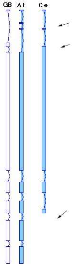

AAtDB, An Arabidopsis thaliana DataBase
John W. MorrisCurator, AAtDB Project
Department of Molecular Biology
Massachusetts General Hospital
Boston, MA 02114
USA
email john.morris@frodo.mgh.harvard.edu
Fax 617-726-6893
Late March 1995 will see the release of Update 3-5. If you are unfamiliar with AAtDB, please look at the WWW tutorial An Introduction to ACEDB: for AAtDB, An Arabidopsis thaliana Database URL (http://weeds.mgh.harvard.edu/introaatdb/index.html). You may use AAtDB remotely by connecting to weeds.mgh.harvard.edu via telnet and logging in with the user name aatdb. There is no password on this account on weeds. However, you need to be running X window software, and on UNIX machines be sure to set 'xhost weeds.mgh.harvard.edu' before launching the telnet session. This note is being written ahead of the release, so the new version may not be running when you read this.
Far and away the largest segment of the update is for the Image class. Mary Anderson at the Nottingham Arabidopsis Stock Centre has provided 600 new, high quality images of germplasm stocks available through the stock centers. The combined size of all the pictures is so great that I've bundled them into a separate update file for those people who do not have the disk space. This means, of course, that if you do not install the external_files update you will get an error if you ask AAtDB to display an image file. For more complete information, check the AAtDB.Retrieval_Installation (version 3-5) file available by ftp in the aatdb/aatdb.3x directory
Some of you will be surprised to see that the number of entries for the Germplasm_Resource Class in the latest update of AAtDB has actually decreased. This is because Mary Anderson has reworked the information so that AAtDB does not have duplicate records for all the lines which are available through ABRC and NASC. To unify these entries all the Germplasm_Resource records start with the prefix CS/N-, the CS standing for Columbus Seed and the N for Nottingham. If you select a particular record, the information that is displayed clearly indicates the code for the ABRC Stock and the code for the NASC stock. In addition, a hint has been added to all the records to tell you how to order stocks from either Centre.
The changes that have been made also mean that the names given to particular lines by the original investigator no longer appear in the MainKeyset if you select the entire Germplasm_Resource class. These entries are carried as "Other_names". This means that you can query the database to find the information you want. For example if you were interested in the line Ru-0, you could make the following query
Find Germplasm_Resource Other_name = Ru-0
Remember there are other easy ways to find the line you are interested in, through the use of Type, a category descriptor and the use of phenotype.
If you were interested in ecotypes for example, you could use the following query to find all the ecotypes held in AAtDB
Find Germplasm_Resource Type = Ecotype
A list of all the types, or category of lines is carried in the hint "About_Germplasm_Types".
If you were interested in lines that had yellow seed you could use the following query
Find Germplasm_Resource Phenotype = "yellow seed"
The ability to query within AAtDB is much simpler since the introduction of "query by example" which displays the structure of the class you which to query, giving you all the options you can chose from to make a query. This is a good starting point if you have not tried to query the database before.
The Sequence class has the second largest part of the update. Over 6000 new sequences in GenBank were added to the database, the great majority of these being ESTs. That number expands greatly as each sequence is processed against the GenBank protein sequence database using BLASTX, and entries for the top scoring protein sequences are added to the AAtDB Sequence_Homol subclass. The table below shows the growth of the sequence classes.
Release number 3-4 3-5 Sequence 23211 34686 Sequence_EST 8858 14915 Sequence_Homol 12152 17257 Sequence_Genomic+ 2201 2495Unfortunately all this growth slows down the access time for the database. If you are searching the sequence class, you can reduce the processing time of queries by taking advantage of the subclasses. For example, if you were looking for long sequences, which are found in the "Sequence_genomic+" class, then you should try a query like
Find Sequence_genomic+ Length > 2000
which would run substantially faster than
Find Sequence Length > 2000
as the program would not need to open up all of the sequences in each of the subclasses.
Another feature with this release, related to the sequence class, are GeneFinder tables in the wgf directory. GeneFinder was developed by Phil Green and colleagues at Washington University, St Louis, Missouri. The new tables being distributed with AAtDB have been developed by Stefan Klostermann at the Max Planck Institute for Biochemistry, Martinsreid and Colin Wilson, also at Washington University and are specific for Arabidopsis. The earlier tables were developed for C. elegans. Genefinder has been integrated into ACEDB and as the name suggests, allows the user to look for potential coding regions in a DNA sequence of interest. Genefinder uses tables developed from known genes for such characters as codon usage bias, to predict introns, exons and score potential splice sites. Several columns in the sequence display show these features. The new Arabidopsis tables show a distinct improvement in predicting coding regions over the original C. elegans tables, which may be seen in the figure below.

The figure shows the intron (bent lines) and exon (boxes) regions of the Arabidopsis sequence ATHDCECAA (GenBank accession D13984) The first column shows the coding regions as given by the GenBank entry the second column shows the predicted coding regions for the DNA sequence computed by Genefinder using the new Arabidopsis tables. The third column shows the prediction using the original C. elegans tables. I've noted with arrows the regions with major differences. While the new tables do not make a perfect prediction, they are distinctly surperior to the C. elegans tables. For additional information on using Genefinder with AAtDB, see the new Genefinder page in the "Introduction to ACEDB" noted above
The new update also comes with revised genetic maps. The recent release of the RI maps from Clare Lister and Caroline Dean have been incoporated. They also provided me with FAX, email, or other source informantion for the markers on the map which is now linked to the Locus entry. Our hope is that this will allow investigators to develop conversations and cooperative projects more easily, by not having to go through the Norwich team to get address information. The new version of the Visible map is taken from two recent publications, the classical map produced by Maarten Koornneef and published in Arabidopsis (E. Meyerowitz and C. Somerville ed. 1994) and the map of embryo lethal mutations published by David Meinke and others (Franzmann et al. (1995) The Plant Journal 7(2), 341-350). The maps are highly consistent, and in the rare case of a marker discrepancy, I`ve added the position informantion for the other map as a note to the Locus entry.
Along with the new maps, there are new 2-point data entries. Clare Lister has supplied the primary segregation data for 123 of the loci on the RI map, this information in included in AAtDB's Population class. The JoinMap program (Piet Stammm (1993) The Plant Journal 3, 739-744) was used to determine 2 point distances and associated errors. For the emb markers on the Visible map David Meinke has provided the 2 point data. In both cases you may view the 2 point data graphically on the Genetic Map displays. In order to see the distance and error representations, and judge how well a marker fits into the map, bring up one of the maps, click once on a locus of interest and then click on the "GMap Data" button on the top of the display. For a more detail on viewing the 2 point data see the Intro to ACEDB manual page, "The Genetic Map III".
 Return to Contents Page: Weeds World Vol2(i)
Return to Contents Page: Weeds World Vol2(i)